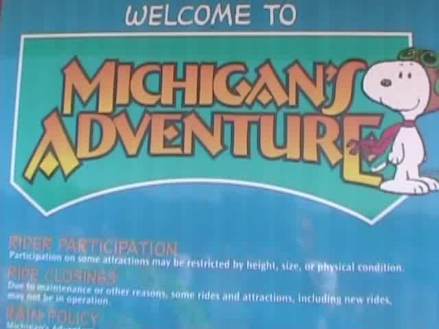
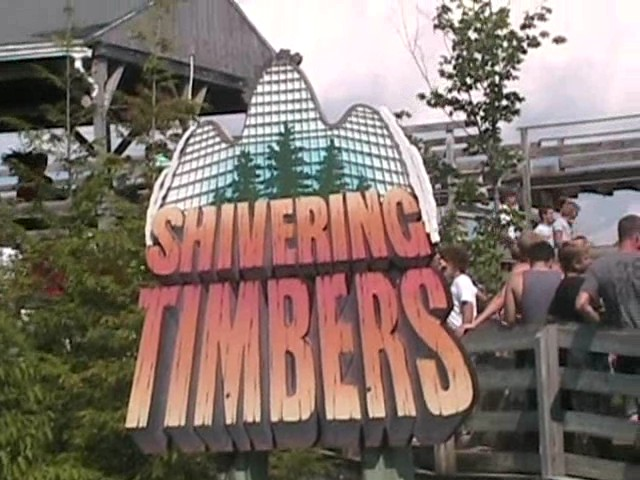
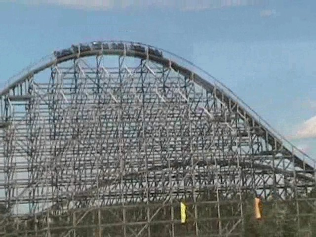
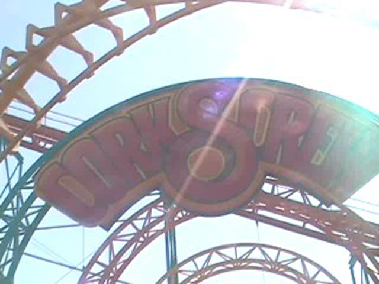
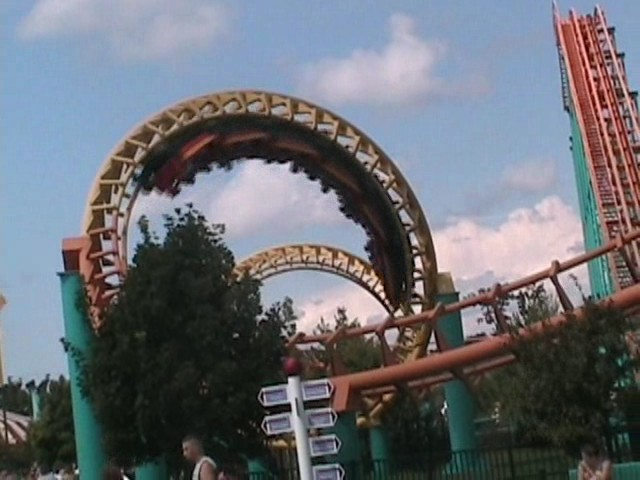
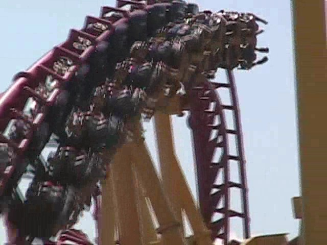

<
North of the Border Tour
Great Escape La Ronde Canadas Wonderland Michigans Adventure Six Flags Great America Kings Island Kennywood Knoebels Dorney Park

Eventually, Canada kicked us out and forced us to flee to Michigan. And while we're in Michigan, why not go to the theme park.

First things first. Let's get the star attraction out of the way.
 It was just how I thought it would be. VERY Overrated.
It was just how I thought it would be. VERY Overrated.

Despite it's Overratedness, it's still a fun ride.
 Now that we got the star attraction out of the way, we can begin the credit whoring! Let's start with the other less talked about woodie in the park.
Now that we got the star attraction out of the way, we can begin the credit whoring! Let's start with the other less talked about woodie in the park.
 While Shivering Timbers was better, at least it wasn't ridicously overrated.
While Shivering Timbers was better, at least it wasn't ridicously overrated.
 It was a pretty good woodie. (Although I rode Wild Beast two days before, so my judgement might have been weak.)
It was a pretty good woodie. (Although I rode Wild Beast two days before, so my judgement might have been weak.)

Up next on the credit whoring agenda was the Corkscrew.
 This ride was just terrible!
This ride was just terrible!

The Vekoma Corkscrew @ La Ronde is WAY better!!!
 Up next was the SLC.
Up next was the SLC.
 Somehow, I feel like I've ridden this before.
Somehow, I feel like I've ridden this before.

Oh Yeah! Now I remember! I rode you at Geauga Lake last year.
 In Michigans Adventure, they grill your own food in front of you. Tastes better than the typical amusement park crap.
In Michigans Adventure, they grill your own food in front of you. Tastes better than the typical amusement park crap.
 They also have a kiddy woodie here.
They also have a kiddy woodie here.
I think I enjoyed this kiddy woodie more because I didn't have to listen Spencer argue with a local 10 year old girl.
 Well, since we're here to credit whore, we might as well get ALL of the credits.
Well, since we're here to credit whore, we might as well get ALL of the credits.
 The final credit needed was the Mad Mouse. The Turns sucked, but the drops were suprisingly great.
The final credit needed was the Mad Mouse. The Turns sucked, but the drops were suprisingly great.
 Since we conquered Michigans Adventure, we just rode Shivering Timbers as it was the best ride there. (Aside from the Chairswings of death that I forgot to photograph.)
Since we conquered Michigans Adventure, we just rode Shivering Timbers as it was the best ride there. (Aside from the Chairswings of death that I forgot to photograph.)
Michigans Adventure is not a Cody Friendly Place.
 "GOING DOWN!!!!"
"GOING DOWN!!!!"
 Aside from the crowds and Corkscrew, Michigans Adventure was a nice place for a suprise park.
Aside from the crowds and Corkscrew, Michigans Adventure was a nice place for a suprise park.
And after a day at Michigans Adventure, there's no better place to finish it off than a meal at Hobos Tavern.
Six Flags Great America
Home